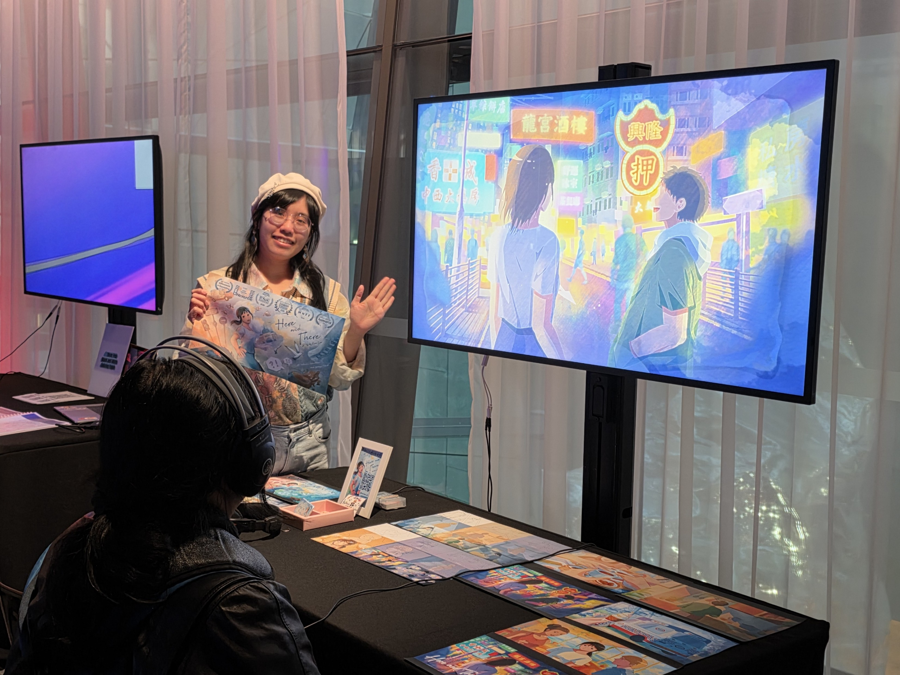

Graduated 2025
Kora Lee
Game designer, animator and illustrator working across storytelling, creative mechanics and immersive experiences.
Kora Lee (she/her) is a game designer, animator and illustrator with a focus on storytelling, creative mechanics, and immersive experiences. She is a versatile, analytical and interdisciplinary practitioner, adept at collaborating effectively with professionals across creative and technical fields. Eager to push her boundaries, she enjoys exploring new technologies like AR, VR, and motion interaction to enhance animation and game experiences.
View Folio ↗Selected Experience
2025
Game Programmer & Technical Artist — Infinite Bloom (VR)
Led a team of three building an exploratory gesture-based VR game in C# with the XR Interaction Toolkit and Meta SDK, directing animation, environment and level design. Accepted to the PAX Rising Showcase and the DiGRAA Conference.
2025
2D Animator (Freelance) — Dream Engine Games
Produced 2D rigged character animation for the opening scene of Rotaeno v2.6, a rhythm mobile game with 100k+ downloads on Google Play.
2024
Animation Director — Here and There (2D)
Directed a 2D digital animation across storyboarding, animation, colouring and compositing. Recognised for storytelling at the RMIT MAGI Expo.
Selected Showcases
2026
ACMI Residency
Selected project — Infinite Bloom (VR)
2026
Taipei Game Show
Exhibiting project — Infinite Bloom (VR)
2025
PAX Aus Rising Showcase
Exhibiting project — Infinite Bloom (VR)